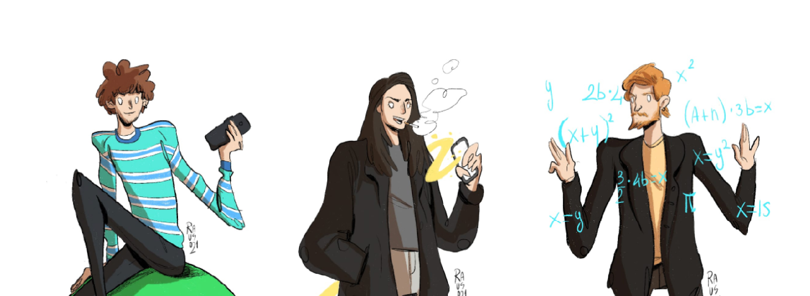
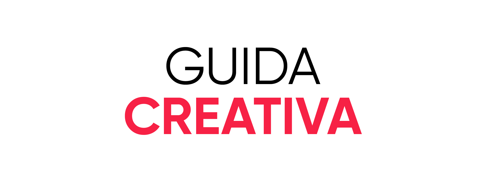

Guida creativa è un sito che espone in modo chiaro ed accessibile alcuni degli step fondamentali della metodologia progettuale. L’utente che si interfaccia con GC potrà organizzare l’ideazione di un qualsiasi tipo di progetto. Grazie ad alcuni strumenti e tools, che il sito propone, il fruitore verrà aiutato dall’inizio alla fine.
Il processo creativo non è sempre chiaro ed accessibile a tutti, spesso si pensa che la creatività sia qualcosa di innato e legato alla capacità immaginativa e alla fantasia delle persone. Il processo creativo in realtà, si serve di moltissimi strumenti, al punto da creare una vera e propria metodologia quasi scientifica per il raggiungimento di obbiettivi specifici. Il sito che ti proponiamo espone in modo chiaro ed accessibile alcuni degli step fondamentali della metodologia progettuale. L’obbiettivo quindi è dare in mano ai creativi uno strumento che facilità e organizza qualsiasi tipo di progetto.